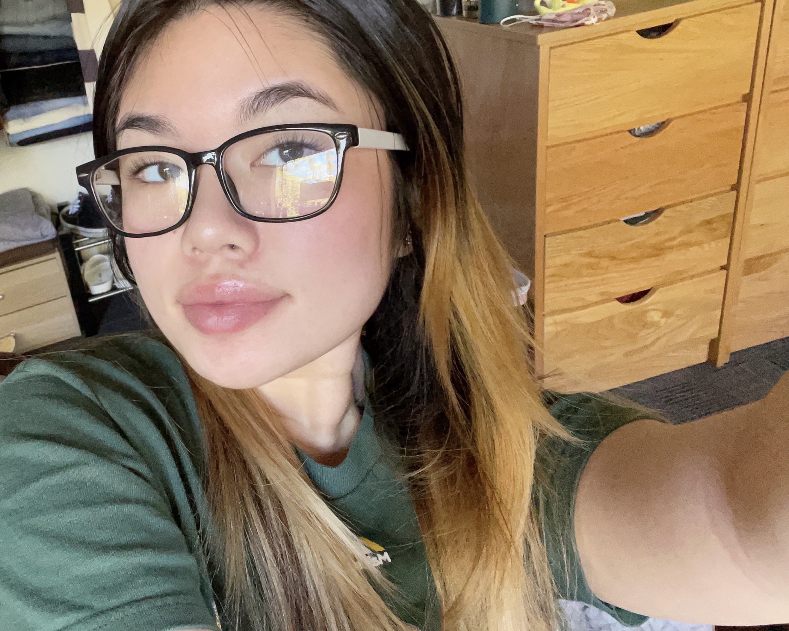

About Me
My name is Malyssa Vo. I am a sophomore at UCSC, studying neuroscience. My pronouns are she/her. I like art as a hobbie, mostly photography and painting. I also like to cook for fun; I'm a big foodie, so I'm always trying new restaurants with many different types of food. Food always reveals a glimpse of someone's culture. In a way, I coincide this with my love for traveling. Being able to live as a local in a different country and experiecing new customs and traditions is a gratifying experience.
Labs:
- Lab 2: Your First HTML
- Lab 3: File Structure
- Lab 4: Pseudocoding and Problem-Solving
- Lab 5: Data Types and Variables
- Lab 6: Arrays and Objects
- Lab 7: Functions
- Lab 8: Anon Functions and Callbacks
- Lab 9: JavaScript for the Web
- Lab 10: JavaScript Events and Forms
- Lab 11: Libraries & jQuery
- Lab 12: Conditionals
- Lab 13: Loops
- Lab 14: Debugging Tools & Strategies
- Lab 15: AJAX
- Lab 16: JSON and APIs
- Lab 17: You Tell Me